Inverted Pendulum: Simulink Modeling
Contents
In this page we outline how to build a model of our inverted pendulum system for the purposes of simulation using Simulink and its add-ons. A great advantage of simulation, as will be demonstrated in this example, is that it can generate numerical solutions to nonlinear equations for which closed-form solutions cannot be generated. The nonlinear simulation can then be employed to test the validity of a linearized version of the model. The simulation model can also be used to evaluate the performance of the control scheme designed based on the linearized model.
Physical setup and system equations
In this example we will consider a two-dimensional version of the inverted pendulum system with cart where the pendulum is contrained to move in the vertical plane shown in the figure below. For this system, the control input is the force that moves the cart horizontally and the outputs are the angular position of the pendulum and the horizontal position of the cart .

For this example, let's assume the following quantities:
(M) mass of the cart 0.5 kg
(m) mass of the pendulum 0.2 kg
(b) coefficient of friction for cart 0.1 N/m/sec
(l) length to pendulum center of mass 0.3 m
(I) mass moment of inertia of the pendulum 0.006 kg.m^2
(F) force applied to the cart
(x) cart position coordinate
(theta) pendulum angle from vertical (down)
Below are the two free-body diagrams of the system.

This system is challenging to model in Simulink because of the physical constraint (the pin joint) between the cart and pendulum which reduces the degrees of freedom in the system. Both the cart and the pendulum have one degree of freedom ( and , respectively). We will generate the differential equations for these degrees of freedom from first principles employing Newton's second law () as shown below.
(1)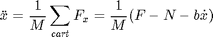
(2)
It is necessary, however, to include the interaction forces and 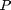 between the cart and the pendulum in order to fully model the system's dynamics. The inclusion of these forces requires modeling the - and -components of the the translation of the pendulum's center of mass in addition to its rotational dynamics. In the Inverted Pendulum: System Modeling tutorial, the interaction forces and were solved for algebraically.
In general, we would like to exploit the modeling power of Simulink to take care of the algebra for us. Therefore, we will model the additional - and -component equations for the pendulum as shown below.
(3)
(4)
(5)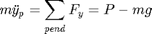
(6)
However, the position coordinates and are exact functions of . Therefore, we can represent their derivatives in terms of the derivatives of . First addressing the -component equations we arrive at the following.
(7)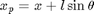
(8)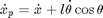
(9)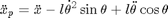
Then addressing the -component equations gives us the following.
(10)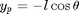
(11)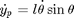
(12)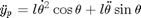
These expressions can then be substituted into the expressions for and from above as follows.
(13)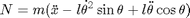
(14)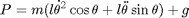
We can now represent these equations within Simulink. Simulink can work directly with nonlinear equations, so it is unnecessary to linearize these equations as was done in the Inverted Pendulum: System Modeling page.
Building the nonlinear model with Simulink
We can build the inverted pendulum model in Simulink employing the equations derived above by following the steps given below.
- Begin by typing simulink into the MATLAB command window to open the Simulink environment. Then open a new model window in Simulink by choosing New > Model from the File menu at the top of the open Simulink Library Browser window or by pressing Ctrl-N.
- Insert four Fcn Blocks from the Simulink/User-Defined Functions library. We will build the equations for 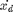, , , and employing these blocks.
- Change the label of each Fcn block to match its associated function.
- Insert four Integrator blocks from the Simulink/Continuous library. The output of each Integrator block is going to be a state variable of the system: , , , and .
- Double-click on each Integrator block to add the State Name: of the associated state variable. See the following figure for an example. Also change the Initial condition: for (pendulum angle) to "pi" to represent that the pendulum begins pointing straight up.

- Insert four Multiplexer (Mux) blocks from the Simulink/Signal Routing library, one for each Fcn block.
- Insert two Out1 blocks and one In1 block from the Simulink/Sinks and Simulink/Sources libraries, respectively. Then double-click on the labels for the blocks to change their names. The two outputs are for the "Position" of the cart and the "Angle" of the pendulum, while the one input is for the "Force" applied to the cart.
- Connect each output of the Mux blocks to the input of the corresponding Fcn block.
- Connect the output of the and Fcn blocks to two consecutive integrators to generate the cart's position and the pendulum's angle. Your current model should now appear as follows.

Now we will enter each of the four equations (1), (2), (13), and (14) into a Fcn block. Let's start with equation (1) which is repeated below.
(15)
- This equation requires three inputs: 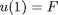, 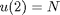, and 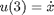. Double-click on the corresponding Mux block and change the Number of inputs: to "3".
- Connect these three inputs to this Mux block in the order prescribed in the previous step.
- Double-click on the first Fcn block and enter the equation for xddot as shown below.

Now, let's enter equation (2) which is repeated below.
(16)
- This equation also requires three inputs:
 , 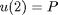, and 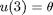.
, 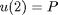, and 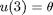.
- Enter the above equation into the Fcn block, change the number of inputs of the Mux block, and connect the correct signals to the Mux block in the correct order.
- Repeat this process for equations (13) and (14) repeated below.
(17)
(18)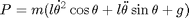
When all of these steps are completed, the resulting model should appear as follows.

In order to save all of these components as a single subsystem block, first select all of the blocks, then select Create Subsystem from the Edit menu. Your model should appear as follows. You can also download the file for this system here, Pend_Model.mdl.

Building the nonlinear model with Simscape
In this section, we alternatively show how to build the inverted pendulum model using the physical modeling blocks of the Simscape extension to Simulink. The blocks in the Simscape library represent actual physical components; therefore, complex multi-body dynamic models can be built without the need to build mathematical equations from physical principles as was done above by applying Newton's laws.
Open a new Simulink model and follow the steps below to create the inverted pendulum model in Simscape. In order to orient oneself, we will assume a coordinate system where the cart moves in the -direction (positive to the right) and the positive -direction is directed up. Following standard convention, the positive -direction is then pointed out of the plane of motion.
- Insert a Body block from the Simscape/SimMechanics/Mechanical/Bodies library to represent the cart. Following the system parameters given at the top of this page, double-click on the block and set the Mass: to "0.5" with units of kg. The Body block by default includes two ports. Since we need ports to define where the pendulum is connected to the cart and where the external force and the frictional force are applied, a third port must be added. This can be accomplished from the button on the right-side of the Position tab. Since the cart will only move in one dimension, the two forces must be co-located along that dimension (the -direction). Since we are in essence modeling the cart as a point mass that can only translate, you do not have to change any of the other default parameters. However, we plan to use Simscape to animate the motion of the system and hence will create additional ports to define the four corners of the cart (2-dimensional only) with respect to its center of gravity (CG). The following figure shows a possible definition of the cart body.

- Insert a second Body block to represent the pendulum. Double-click on the block and set the Mass: to "0.2" with units of kg. Since the pendulum can only rotate about the -axis, the inertia associated with that principle direction is the only one that needs to be defined. For simplicity, define the Inertia: equal to "0.006*eye(3)" with units of kg*m^2. Since we are modeling the pendulum as a rigid body that has size as well as mass, the body can rotate and it is important to define the location of the pendulum's attachment to the cart and its CG correctly. Specifically, define the point of attachment CS1 to have a position "[0 0 0]" and an origin that is Adjoining and define the CG to be 0.3 meters away from the attachment CS1 (as defined above). Also define the four corners of the pendulum. Make sure to show the port defining the attachment point. Under the Visualization tab, you can also change the pendulum's color to make it stand out from the cart.

- Next add a Revolute block from the Simscape/SimMechanics/Joints library to define the joint connecting the pendulum to the cart. By default, the joint will be defined to rotate about the -axis which matches the situation we are modeling. Connect the Body block corresponding to the cart to the base port (B) of the joint and the Body block corresponding to the pendulum to the follower port (F) of the joint. Double-click on the Revolute block and set the Number of sensor / actuator ports: to "2".
- Then add a Joint Initial Condition block and a Joint Sensor block from the Simscape/SimMechanics/Sensors & Actuators library and connect these blocks to the Revolute block. Double-click on the Joint Initial Condition block and check the Enable box. We can use the default values for initial position and velocity of the joint. Employing an initial position of 0 degrees corresponds to the pendulum being pointed vertically upward based on the definition of the pendulum body above. This isn't consistent with the original definition of , but it will make the response results consistent with those generated from the linearized model in the other pages of this example. Next double-click on the Joint Sensor block and change the units on the Angle measurement to rad. Angular position is the only measurement that is needed for this joint, the other boxes may remain unchecked.
- Add two Prismatic blocks from the Simscape/SimMechanics/Joints library to define the translational degree of freedom of the cart and the application of the forces to the cart. Since the cart is technically a point mass we need only one Prismatic block, but by employing two we can apply the forces at different locations. Double-click on each Prismatic block and change the Axis of Action to "[1 0 0]" to reflect the fact that the two forces act in the -direction. Then connect the follower port (F) of each block to the ports for the applied force (CS1) and frictional force (CS2) on the Body block representing the cart.
- Next add two Ground blocks from the Simscape/SimMechanics/Bodies library to define the base for the motion of the cart. Specifically, connect the output of each ground block to the base port (B) of each Prismatic block.
- For one of the Ground blocks you just created, double-click on the block and check the Show Machine Environment port box. Then add a Machine Environment block from the Simscape/SimMechanics/Bodies library and connect it to the Ground block for which you just added the port. The Machine Environment block allows us to define the gravitational force in the simulation. In this case the default direction (negative -direction) and magnitude ("9.81") for units of m/s^2 are correct. This block also allows us to define the parameters for visualization and the numerical solver. The default parameters are fine for this example.
- Next add two Joint Actuator blocks and one Joint Sensor block from Simscape/SimMechanics/Sensors & Actuators library. The Joint Actuator blocks will be employed for generating the external applied force and the frictional force, while the Joint Sensor block will sense the motion of the cart. Note, there is also a Translational Friction block that is available, but we will calculate the frictional force ourselves since we are employing only a simple viscous model. Double-click on one of the Prismatic blocks and set the Number of sensor / actuator ports: to "1" (for the force actuator). For the other Prismatic block, set the Number of sensor / actuator ports: to "2" (one for the force actuator and one for the cart sensor). Then connect the Joint Actuator and Joint Sensor blocks as described. The default values for the Joint Actuator blocks are sufficient for this case, but we must change the Joint Sensor block to output position and velocity since the velocity is needed for calculating the frictional force. Double-click on the Joint Sensor block and check the box for Velocity while leaving the box for Position checked. The default metric units do not need to be changed. Also uncheck the box for Output selected parameters as one signal.
- Add a Gain block from the Simulink/Math Operations library to represent the viscous friction coefficient . Set the Gain to "0.1" as defined at the top of this page and connect the input to the velocity output of the Joint Sensor block for the cart and connect the output of the gain to the Joint Actuator for the frictional force.
- Next, add two Out1 blocks and one In1 block from the Simulink/Ports & Subsystems library. Connect the Out1 blocks to the remaining Joint Sensor block outputs and the In1 block to the remaining Joint Actuator input.
- Finally, connect and label the components as shown in the following figure. You can rotate a block in a similar manner to the way you flipped blocks, that is, by right-clicking on the block then selecting Rotate Block from the Format menu.

You can also save this model as a single subsystem block as described in the previous section. You can change the color of the subsystem by right-clicking on the block and choosing Background Color from the resulting menu. You can download the complete model file here, Pend_Model_Simscape.mdl, but note that you will need the Simscape addition to Simulink in order to run the file. We use this model in the Inverted Pendulum: Simulink Controller Design page.
Generating the open-loop response
We will now simulate the response of the inverted pendulum system to an impulsive force applied to the cart. This simulation requires an impulse input. Since there is no such block in the Simulink library, we will use the Pulse Generator block to approximate a unit impulse input. We could use either of the models we generated above, however, we will use the Simscape model in this case because it will allow us to visualize the motion of the inverted pendulum system. Follow the steps given below.
- Open the inverted pendulum simscape model generated above.
- Add a Pulse Generator block from the Simulink/Sources library. Double-click on the block and change the parameters as shown below. In particular, change the Period: to "10". Since we will run our simulation for 10 seconds, this will ensure that only a single "pulse" is generated. Also change the Amplitude to "1000" and the Pulse Width (% of period): to "0.01". Together, these settings generate a pulse that approximates a unit impulse in that the magnitude of the input is very large for a very short period of time and the area of the pulse equals 1.

- Add a Scope block from the Simulink/Sinks library.
- In order display two inputs on the scope, double-click on the Scope block, choose the Parameters icon, and change the Number of axes: to "2".
Connect the blocks and label the signals connected to the Scope block as shown.

Save this system as Pend_Openloop.mdl, or download it here
Before we start the simulation, we would like to enable the visualization of the inverted pendulum system. From the menus at the top of the model window choose Simulation > Configuration Parameters. Then from the from the directory on the left-side of the window choose Simscape > SimMechanics. Then check the box for Show animation during simulation as shown in the figure below.

Now, start the simulation (select Start from the Simulation menu or enter Ctrl-T). As the simulation runs, an animation of the inverted pendulum like the one shown below will visualize the system's resulting motion.

Then open the Scope and click the Autoscale button. You will see the following output for the pendulum angle and the cart position.

Notice that the pendulum repeatedly swings through full revolutions where the angle rolls over /$-\pi$ radians. Furthermore, the cart's position grows unbounded, but oscillates under the influence of the swinging pendulum. These results differ quite a bit from the results of the open-loop simulation shown in the Inverted Pendulum: System Analysis page. This is due of course to the fact that this simulation employed a fully nonlinear model, while the previous analysis had relied on a linear approximation of the inverted pendulum model. In order to compare the results of the simulation model more directly to the prior results, we will extract a linear model from our simulation model.
Extracting a linear model from the simulation
Aside from comparing our simulation model to our prior results, it may also be desirable to extract a linear model for the purposes of analysis and design. Much of the analytical techniques that are commonly applied to the analysis of dynamic systems and the design of their associated control can only be applied to linear models. Therefore, it may be desirable to extract an approximate linear model from the nonlinear simulation model. We will accomplish this from within Simulink.
- To begin, open either of the Simulink models generated above, Pend_Model.mdl or Pend_Model_Simscape.mdl.
- If you generated your simulation model using variables, it is necessary to define the physical constants in the MATLAB workspace before performing the linearization. This can be accomplished by entering the following commands in the MATLAB command window.
M = 0.5; m = 0.2; b = 0.1; I = 0.006; g = 9.8; l = 0.3;
- Next choose from the menus at the top of the model window Tools > Control Design > Linear Analysis. This will cause the Linear Analysis Tool window to open.
- In order to perform our linearization, we need to first identify the inputs and outputs for the model and the operating point that we wish to perform the linearization about. First right-click on the signal representing the Force input in the Simulink/Simscape model. Then choose Linearization Points > Input Point from the resulting menu. Similarly, right-click on each of the two output signals of the model (pendulum angle and cart position) and select Linearization Points > Output Point from the resulting menu in each case. The resulting inputs and outputs should now be identified on your model by arrow symbols as shown in the figure below.
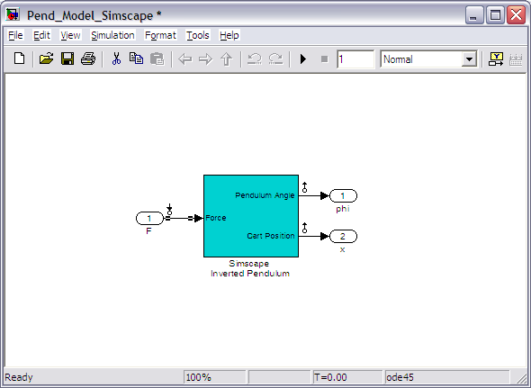
- Next we need to identify the operating point to be linearized about. From the Operating Point: menu choose Linearize At... > Trim model... as shown in the figure below. This will open the TRIM MODEL tab. Within this tab, select the Trim button indicated by the green triangle. This will create the operating point op_trim1.
- Since we wish to examine the impulse response of this system, return to the EXACT LINEARIZATION tab and choose New Impulse from the Plot Result: drop-down menu near the top window as shown in the figure below.
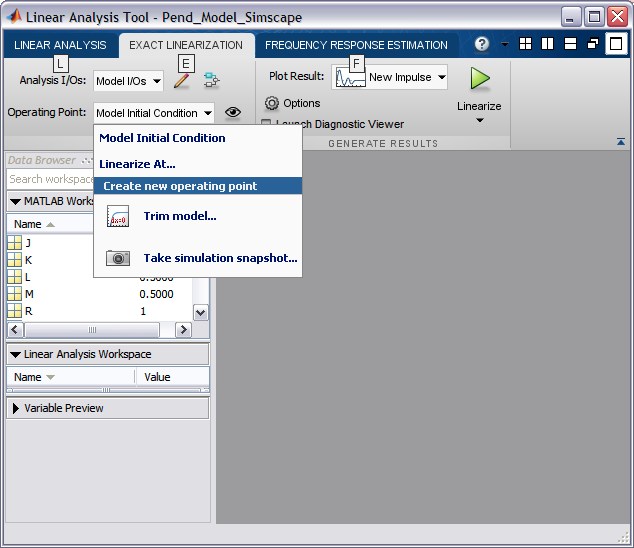
- Finally, choose op_trim1 from the Operating Point: drop-down menu and click the Linearize button indicated by the green triangle. This automatically generates an impulse response plot and the linearized model linsys1.
- In order to compare the results to those plots generated in the Inverted Pendulum: System Analysis page, it is necessary to change the -axis scaling. This can be achieved from by choosing Properties from the right-click menu. The resulting window should then appear as follows, where the top plot is response of the pendulum angle and the bottom plot is the response of the cart position.
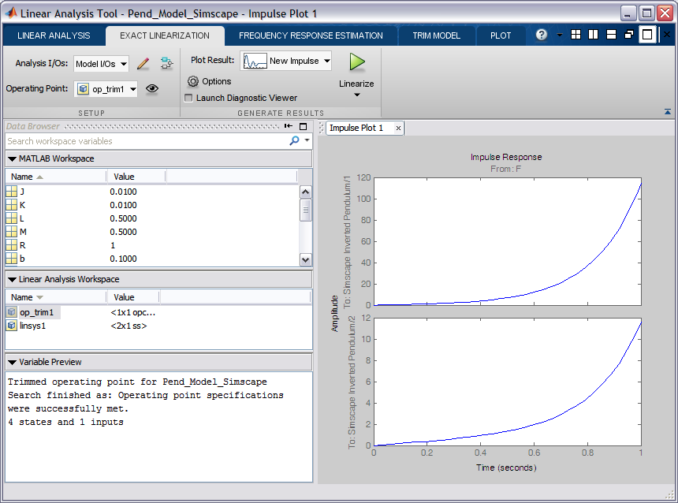
These plots are very similar, though not exactly the same, as those generated in the Inverted Pendulum: System Analysis page.
We can also export the resulting linearized model into the MATLAB workspace for further analysis and design. This can be accomplished by simply right-clicking on the linsys1 object in the Linear Analysis Workspace to copy the object. Then right-click within the MATLAB Workspace to paste the object.